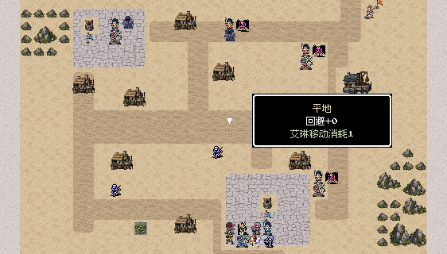

REVENGE MEMORIES / CHAPTERS 3–5
后续25张地图 · 场景与实机复查
延续M11清楚的路网、建筑入口与自然地形关系，重排城市街区、运输大道、雪峡、盐原、沼泽干岛和神宫院落。新增图集只组合现有原生像素材质，保持低饱和风格。M11和前两章已完成的14图保持原样。
25张定稿地图2轮实际输入检查30,676次最终轮按键55张实机视口
左侧为本轮改动前，右侧为定稿后的Godot后台场景。展开每关可查看当前版真实按键试玩截图。每关从真实开发记录返回整备后重新进入，沿用真实成长、装备和原目标，未改写随机结果；这是逐关复查，不是全新存档连续五章通关。判定fixture不计为试玩。
M31 · 西街撤离
第3章 · 28 × 24格 · 第14回合通关空间与行动
- 西门撤离主街与东侧环街围合拘押院，院门朝南接路；居民获释后可以沿连续宽街抵达真正的西门。
- 街边医舍、粮仓和民宅各有门前短巷，南住区围绕水井布置，林带与小院分开街道和建筑。
- 保留两名拘押居民、侧街路障和第四敌回合追兵的原位置与条件；部署到拘押院不增加绕行。
原任务
救出被拘押者并撤至西门；击败追捕队长。不得攻击平民。
胜利后完成对应据点交互并返回世界地图。 真实输入与接续记录
展开本轮实机视口 · 3张
M32 · 军需大道截运
第3章 · 32 × 24格 · 第14回合通关空间与行动
- 军需大道穿过丘陵林带，两处铺石运输站直接连在车辙上；北口由哨棚守卫，粮仓和工棚都有接路的南向入口。
- 南侧林缘留出一条宽度两格的迂回道，树林集中在道路两侧，车场与粮袋沿站场边缘放置。
- 运输车、两站和车锁的位置与原条件保持，既有北撤道路贯通，首个可控制目标不增加路径距离。
原任务
占领两处运输站并击败护送长；救出车上的工匠。运输车逃出北口则失败。
胜利后完成对应据点交互并返回世界地图。 真实输入与接续记录
展开本轮实机视口 · 2张
M33 · 沿海石堡
第3章 · 28 × 26格 · 第17回合通关空间与行动
- 石堡的铺石内院、南侧工房与东岸投送栈桥形成明确的军港关系；码头控制旗位于上岸通路尽头。
- 西侧灰岩山脊与林坡框住入堡车道，诊所和工房各有门前支路，南林缘留有平行进退空间。
- 保留格曼交涉、工房记录和投送码头的实际位置，堡主与增援条件保持；栈桥两端均连接真实陆地。
原任务
击败堡主并控制投送码头；格曼可投降，存活时不作为必须歼灭对象。
胜利后完成对应据点交互并返回世界地图。 真实输入与接续记录
展开本轮实机视口 · 2张
F31 · 码头脱围
第3章 · 28 × 22格 · 第17回合通关空间与行动
- 己方船停在西侧港湾，连续的两格跳板连到码头主街；船首、甲板、船尾与上岸口保持同一条船的轮廓。
- 北扣船所和南停泊所分别朝南开门，门前支街接入环形装卸通道，伤者无需穿越仓库或货箱。
- 木质靠泊边、石质内街、仓库与货场分层呈现；两处解锁、伤者撤回船只及第三敌回合增援规则保持。
原任务
保护两组船上伤者回到己方船，并击败扣船队长；伤者全灭失败。
胜利后完成对应据点交互并返回世界地图。 真实输入与接续记录
展开本轮实机视口 · 2张
F32 · 盐路解围
第3章 · 28 × 24格 · 第13回合通关空间与行动
- 干燥盐路绕开西侧卤湖，经过中央水井歇脚坪再抵达北口；路旁小屋、运输车与补给箱组成有人使用的盐路驿站。
- 灰色岩台收束北侧和东南边界，主路与东侧短道围出中央开阔战场，避免用密林装饰盐原。
- 向导、路线册和可移路障位置保持；向导正常撤离与遇难后回收路线册两条路径都可达。
原任务
击败封路神官并护送向导至出口；不要求踏遍沙地。
胜利后完成对应据点交互并返回世界地图。 真实输入与接续记录
展开本轮实机视口 · 2张
F33 · 提炼院后庭
第3章 · 28 × 24格 · 第11回合通关空间与行动
- 提炼院用石质主廊连接物料仓、术士工房、记录室和控制阵台，院内保留回廊与中央设备空地，呈现设施后庭而非空白广场。
- 南侧卸货口接运输路，外侧盐地和灰岩台划定设施边界；祭器平台独立设于东侧，控制旗在玩家能够站立的地面。
- 两名术士的保护、工房开门、记录复制与阵台稳定各自保留，所有门前操作格与原战斗条件一致。
原任务
击败控制神官，保护两名维持设施的术士，并取得调节记录。
胜利后完成对应据点交互并返回世界地图。 真实输入与接续记录
展开本轮实机视口 · 2张
S31 · 山村地牢
第3章 · 22 × 20格 · 第10回合通关空间与行动
- 灰岩地牢围绕两间独立牢房组织横廊，东西牢门都朝向明亮土质通道，主廊连到东北守卫岗。
- 矿口工具角与东侧巡守回廊形成可读的内部空间；自然岩壁取代整圈紫色方框，牢室和火盆保留完整原生像素轮廓。
- 牢门、家属、首领和劝降条件保持，释放家属后不增加撤离要求；两扇门都可从南侧到达。
原任务
击败狱卒首领，释放两组家庭；至少一组存活。
胜利后完成对应据点交互并返回世界地图。 真实输入与接续记录
展开本轮实机视口 · 2张
S32 · 盐原营地
第3章 · 28 × 22格 · 第11回合通关空间与行动
- 营地依靠西侧卤湖与北面岩台选址，两间拘押营房都有南向门前空地，并由宽干道连向军帐与守军营房。
- 外围短木栅、仓箱和东侧巡路表达临时驻军用途；岩台和盐地保留开阔视线，不铺设与盐原不符的树林。
- 两间营房及诺娅、弟弟、居民的位置和独立生死判定保持；从部署区到任一牢门都有连续通路。
原任务
击败营长，打开术士与居民营房；诺娅及弟弟分别记录生死。
胜利后完成对应据点交互并返回世界地图。 真实输入与接续记录
展开本轮实机视口 · 2张
M41 · 雪峡撤离战
第4章 · 32 × 26格 · 第17回合通关空间与行动
- 融雪溪顺峡谷贯通南北，两座横向木桥分别接北村与南口，桥面两端均落在村道上。
- 雪松集中成林，岩壁形成峡口轮廓；村舍南门、医舍停靠点与东侧巡逻路各有明确支路。
- 南口部署、三组居民、伤者停靠点与追兵入口原位保留，居民可沿连贯道路向南撤离。
原任务
疏通南口与停靠点，撤离至少两组居民并击败指挥官。
胜利后完成对应据点交互并返回世界地图。 真实输入与接续记录
展开本轮实机视口 · 3张
M42 · 铁骑封锁线
第4章 · 32 × 28格 · 第15回合通关空间与行动
- 贯通南北的宽军道通向北侧关堡；西侧骑兵环道与东侧营地支路形成可迂回的关卡。
- 投送站位于独立铺石后勤院，仓房、营帐和货箱沿院缘布置，驻军与旧同袍各有可辨识的集结区域。
- 旧同袍交涉、投送站和营地登记坐标不变，原骑兵与增援入口保持连通。
原任务
控制投送站并击败铁骑统领。
胜利后完成对应据点交互并返回世界地图。 真实输入与接续记录
展开本轮实机视口 · 2张
M43 · 北境日塔
第4章 · 28 × 28格 · 第10回合通关空间与行动
- 日塔坐落于两侧雪崖之间，铺石主路接入外院，塔脚留出前庭与环行通道。
- 西侧医舍、东侧控制工房形成独立服务院，覆雪花圃和灯柱分开战斗区域，避免整片无层次的石地。
- 外院旗位、病人、工匠及控制室南侧读档位置不变，尚未取得观测步骤时仍能完成夺塔。
原任务
接管外院与控制室，击败塔卫统领。
胜利后完成对应据点交互并返回世界地图。 真实输入与接续记录
展开本轮实机视口 · 2张
M44 · 王都城门
第4章 · 32 × 28格 · 第16回合通关空间与行动
- 城墙与四格正门作为明确前后界线，南侧民居、仓储街、伤兵医舍分别围绕主街组织。
- 北侧留出门内集结广场，城堡前路与门楼衔接；街角绿地、屋门前的小路与边缘林带减少大面积重复铺砖。
- 门楼占领、伤兵后撤门、赫兰投降判定与增援保持原位；屋顶和城墙不能通行，入口及巷道均可到达。
原任务
占领门楼，击败并解除赫兰指挥权。
胜利后完成对应据点交互并返回世界地图。 真实输入与接续记录
展开本轮实机视口 · 2张
F41 · 沙城守井战
第4章 · 32 × 26格 · 第11回合通关空间与行动
- 沙城以两处铺石井院为生活中心，取水路连接井台与民居，横街供部队穿行和调防。
- 外围沙丘岩脊、紧凑的住屋组和仓房围成街区；井口保持实体，南侧取水台清楚可站。
- 南井首回合布防和分兵夺北井的原距离保持，敌军连续占井一轮才失守的规则不变。
原任务
保住至少一井至第6己方回合，并击败强迁队长。
胜利后完成对应据点交互并返回世界地图。 真实输入与接续记录
展开本轮实机视口 · 2张

F41 · 第1回合 · 562 × 320原生视口
F41 · 第4回合 · 426 × 240原生视口
F42 · 盐原观测台
第4章 · 28 × 28格 · 第17回合通关
优化前
优化后 · 当前运行场景
空间与行动
- 盐原上的观测院采用磨旧石路和裸露盐地交错，主设备、东楼档案与北侧值守堡各有明确前庭。
- 成组岩脊围出高台边缘，旧石拱、对称灯柱与抄录工住屋交代遗址和维护区域，保持低饱和度。
- 东楼记录南侧读取格与中央设备确认格原位保留，焚毁兵出发时机和保护记录任务不变。
原任务
保护东楼记录、复制设备，击败萨弥。
胜利后完成对应据点交互并返回世界地图。 真实输入与接续记录
展开本轮实机视口 · 2张
F42 · 第1回合 · 562 × 320原生视口
F42 · 第4回合 · 426 × 240原生视口
F43 · 亡潮沼泽
第4章 · 32 × 28格 · 第21回合通关空间与行动
- 毒沼由不规则水洼、抬高干岛和木栈连接，第一、第二、第三干地沿连续古道依次可见。
- 木栈只铺在湿地间的窄段，接地端各有足够落脚地；船口与北侧旧瞭望塔明确标出进入和离开方向。
- 毒沼材质和原伤害保留，居民与干地确认点原位；护送路线保持干燥连续，并保留西侧绕行选择。
原任务
依次确认三处干地、撤离至少两组居民并击败神官。
胜利后完成对应据点交互并返回世界地图。 真实输入与接续记录
展开本轮实机视口 · 3张
F43 · 第1回合 · 562 × 320原生视口
F43 · 第4回合 · 426 × 240原生视口
F43 · 第1回合 · 426 × 240原生视口
F44 · 沉没祭所
第4章 · 32 × 28格 · 第20回合通关空间与行动
- 沉没祭所由中央调节庭、两座下陷水院和外圈石廊组成；西侧小码头接主入口，北侧神门构成视觉终点。
- 水院岸线直接落在真实水格内，局部木便桥横跨北池；残留盐渍平台与成对灯柱增强遗址层次。
- 三处调节点及工匠位置不变，沿外环可完成全部交接；维修等待、守兽与条件增援规则保持。
原任务
交接三处调节点，保护工匠至下一回合并击败守兽。
胜利后完成对应据点交互并返回世界地图。 真实输入与接续记录
展开本轮实机视口 · 2张
F44 · 第1回合 · 562 × 320原生视口
F44 · 第4回合 · 426 × 240原生视口
S41 · 黑钟村名册
第4章 · 24 × 22格 · 第8回合通关
优化前
优化后 · 当前运行场景
空间与行动
- 黑钟村形成钟楼前街、名册屋前院与西侧避难院，覆雪住屋集中在道路两旁而非散落空地。
- 林带包围村缘并留出视线，所有房屋正门都有短路接入主街，南侧另设回村支路。
- 名册读取、同袍对话与避难院坐标不变，焚毁支线损失仍不阻断主线。
原任务
击败焚毁队长；尽力保护名册，失去记录不阻断主线。
胜利后完成对应据点交互并返回世界地图。 真实输入与接续记录
展开本轮实机视口 · 2张
S41 · 第1回合 · 562 × 320原生视口
S41 · 第4回合 · 426 × 240原生视口
S42 · 沼泽孤岛
第4章 · 24 × 22格 · 第8回合通关
优化前
优化后 · 当前运行场景
空间与行动
- 诊疗所位于岛中央抬高干地，病人等候处、照护住屋与西南船口由连续转运路相接。
- 岛缘水洼与湿地边界自然收束，两段木栈跨过低洼处，树林集中在干路外侧，便于判断安全通行区域。
- 赛琳、两组病人和船口接应位置均不移动；记录屋南侧可读，护送两组病人撤离的条件保持。
原任务
确认船口、护送两组病人撤离并击败清洗队长。
胜利后完成对应据点交互并返回世界地图。 真实输入与接续记录
展开本轮实机视口 · 2张
S42 · 第1回合 · 562 × 320原生视口
S42 · 第4回合 · 426 × 240原生视口
M51 · 王都内廷
第5章 · 28 × 26格 · 第14回合通关
优化前
优化后 · 当前运行场景
空间与行动
- 宫门大道贯通北宫与南侧撤离口，东西病房由连续救护横街连接；两处南门操作格与伤兵出门格保持原位。
- 西侧仓院以土色卸货地和独立小路连接救护街，药车留在院前；建筑本体仍不可步行。
- 水池、成组常绿树和庭院草地收住宫墙边缘，南部保留伤兵转送与队伍展开空间。
- 采用既有低饱和宫殿美术，主路换为较克制的浅砂石铺面，避免大面积青色棋盘抢过角色。
原任务
开放两处伤兵病房，撤离至少一组伤兵，并击败神军队长。
胜利后完成对应据点交互并返回世界地图。 真实输入与接续记录
展开本轮实机视口 · 2张
M51 · 第1回合 · 562 × 320原生视口
M51 · 第4回合 · 426 × 240原生视口
M52 · 登天桥
第5章 · 32 × 24格 · 第12回合通关
优化前
优化后 · 当前运行场景
空间与行动
- 保留完整六格石桥，三个桥锁沿同一横向主路排列；两岸道路确实接上桥面，桥外均为不能步行的水域。
- 西桥台保留部署与增援通道，东桥台为守卫留出回廊，两端由小片常绿庭园和错落岸线形成落脚点。
- 六根原有完整石柱与桥边护栏保持原位，桥面以浅石铺装和两条克制的青灰嵌线区分通行层。
- 三段控制顺序、首领与出口均保持，景观不增加绕行距离。
原任务
依次解除三段桥锁，并击败桥卫统领。
胜利后完成对应据点交互并返回世界地图。 真实输入与接续记录
展开本轮实机视口 · 3张
M52 · 第1回合 · 562 × 320原生视口
M52 · 第4回合 · 426 × 240原生视口
M52 · 第1回合 · 426 × 240原生视口
F51 · 祭所底层
第5章 · 28 × 26格 · 第16回合通关空间与行动
- 地下水渠从北侧岩口延伸到南部维修廊，中段三格检修桥连接两岸装置，渠尾另留日常维护通道。
- 两处调节器南面的交接格和工班站位保持原样，操作平台与通往楼梯的石路连续。
- 外围岩壁与小型检修物资围合地下空间，灯火分布在工作区边缘，不把地下祭所画成露天庭园。
- 北侧守卫平台、南部增援口和全部部署点仍可步行到达；交接后保护一轮的机制不变。
原任务
交接两处修复区，分别保护至下一己方回合，并击败守卫长。
胜利后完成对应据点交互并返回世界地图。 真实输入与接续记录
展开本轮实机视口 · 2张
F51 · 第1回合 · 562 × 320原生视口
F51 · 第4回合 · 426 × 240原生视口
F52 · 日宫下层
第5章 · 32 × 26格 · 第14回合通关
优化前
优化后 · 当前运行场景
空间与行动
- 中央水渠分开左右门阵，原石桥与南侧绕渠回廊组成闭合路线，主殿南侧另有通向两翼的短廊。
- 两处装置门前留足操作平台，站位与确认规则保持原样；水面边缘不再用整格伪岸线占用道路。
- 大树与矮树集中在外围和南部庭园，建筑入口、中央桥和正殿阶前保持清楚留白。
- 共享神宫的低饱和石材和建筑，与地下维修层通过水渠形制相联系，但用庭园和双翼布局区分场景。
原任务
确认两处门阵，击败下层神官。
胜利后完成对应据点交互并返回世界地图。 真实输入与接续记录
展开本轮实机视口 · 2张
F52 · 第1回合 · 562 × 320原生视口
F52 · 第4回合 · 426 × 240原生视口
S51 · 神宫旧书库
第5章 · 24 × 20格 · 第10回合通关空间与行动
- 书库正门与南门交接处沿同一条中轴步道相连，取回记录后能直观看到返回方向。
- 两侧阅览庭由一圈石路连通，成组常绿树隔出安静的小庭，守卫区与部署区仍有充分展开空间。
- 原有书箱、石柱和完整书库立面保留；南门不增加假门或不可交互装饰，避免误判。
- 支线记录、南门交接条件和开放时机均不变，路线可直接走完，也能从侧廊接近守卫。
原任务
取回旧事记录，击败书库守卫后在南门交接。
胜利后完成对应据点交互并返回世界地图。 真实输入与接续记录
展开本轮实机视口 · 2张
S51 · 第1回合 · 562 × 320原生视口
S51 · 第4回合 · 426 × 240原生视口
J53 · 神宫前庭
第5章 · 32 × 28格 · 第9回合通关
优化前
优化后 · 当前运行场景
空间与行动
- 两军从西南、东南入口沿南廊会合，五格中轴通向正殿；双方各有直达侧翼阵门的道路。
- 双池与成组庭树分隔外侧通道和中央推进线，横向联络廊让两翼能互相支援，无需绕入建筑背后。
- 两处阵门操作格、双方部署名册和前庭统领位置保持，新增景观不会把单方队伍关在支路。
- 浅石铺路承托低饱和宫殿，只在会师线和中轴保留细青灰嵌线，重点留给建筑、角色和阵门。
原任务
确认两翼门阵，击败前庭统领。
胜利后完成对应据点交互并返回世界地图。 真实输入与接续记录
展开本轮实机视口 · 2张
J53 · 第1回合 · 562 × 320原生视口
J53 · 第4回合 · 426 × 240原生视口
J54 · 太阳神乌库布·卡基
第5章 · 32 × 30格 · 第15回合通关
优化前
优化后 · 当前运行场景
空间与行动
- 神座与五格入场轴线一眼可辨，前庭的分路推进在此收束为宽阔的中央会战平台。
- 两侧柱廊、水池与南部庭园围合场地；西东回转廊保留会师与援护空间，池边不设置隐藏可走格。
- 神座、首领、双主角部署与半血援军规则不变，平台留空让现有战斗动作和法术表现清楚。
- 沿用低饱和神宫建筑与浅色石材，用稀疏青灰嵌线和成组植被控制节奏，不以额外发光或高饱和地面遮盖单位。
原任务
击败乌库布·卡基的实体；胡纳普和艾琳均须存活。
胜利后逐页完成后日谈。 真实输入与接续记录
展开本轮实机视口 · 3张
J54 · 第1回合 · 562 × 320原生视口
J54 · 第4回合 · 426 × 240原生视口
J54 · 第1回合 · 426 × 240原生视口
复查中解决的问题
补齐水岸与桥台关系；移开三处木台上的装饰小艇并设置真实泊位；清理道路旁孤立石砖和被道路切到的树冠；将雪地、沙地岩石的深色底块改为对应环境地面。
F43首轮驱动追击西北敌人，未及时保护中央居民而失败。采用沿中央便桥推进、飞行单位分担护送的普通行动后通关，原失败与重试均保留。人物属性、伤害和任务条件没有为通过检查而修改。
所有Godot渲染均使用后台窗口保护，不激活用户窗口。运行截图逐项检查文字安全区域；本轮未更新iPhone安装包。完整素材尺寸、字节数、无损压缩记录及检查限制见交付记录。